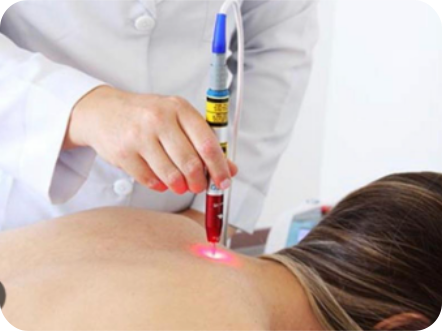

Laser Acupuntura:
Seguro, Eficaz e sem Efeito Colateral
A Acupuntura a laser é uma terapia onde os pontos são estimulados por meio de laser de baixa intensidade, onde conseguimos entregar os mesmos benefícios que o método original, utilizando os mesmos princípios.
Devido à alta eficiência do recurso e ao receio de alguns pacientes em relação à utilização de agulhas, a acupuntura a laser se tornou uma ótima alternativa para quem busca pela técnica chinesa
